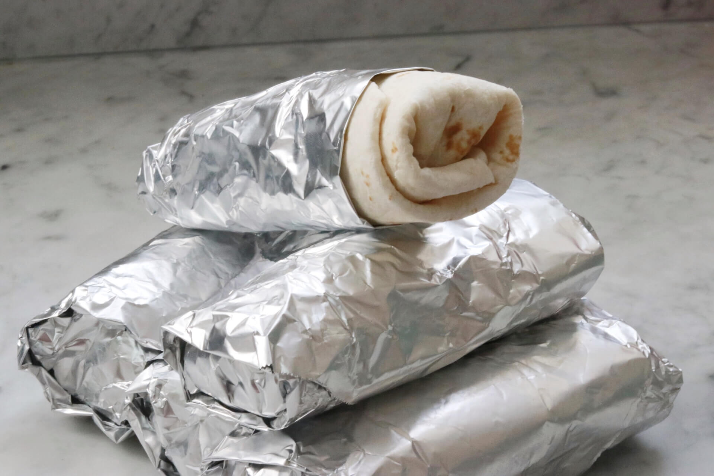

Freeze-and-Reheat Breakfast Burritos

Description
This recipe for hearty breakfast burritos is intended to be made in a large batch so that individual burritos can be frozen and reheated as needed. Making these in advance and freezing is a big time-saver for busy mornings!
- Cook: 24 mins
- Total: 54 mins
- Prep: 30 mins
- Servings: 10
- Yield: 10 burritos
Ingredients
- 1 (12 ounce) package bacon
- 10 large eggs
- 3 tablespoons milk
- ¼ teaspoon salt
- 3 tablespoons vegetable oil
- 4 cups frozen hash brown potatoes with peppers and onion (such as Ore-Ida® Potatoes O'Brien®)
- ½ teaspoon garlic salt
- ¼ teaspoon ground black pepper
- 10 large flour tortillas
- 1 ½ cups shredded Cheddar cheese
- 1 cup salsa, or to taste
Steps
- Place bacon in a large skillet and cook over medium-high heat, turning occasionally, until evenly browned, about 10 minutes. Drain on paper towels and crumble into bits. Keep skillet warm.
- Whisk eggs, milk, and salt together in a bowl. Pour into the hot skillet. Cook and stir over medium-high heat until eggs are set, about 5 minutes. Transfer to a bowl.
- Heat oil in same skillet over medium-high heat. Add frozen potatoes, garlic salt, and pepper. Fry until browned on the bottom, 4 to 5 minutes. Flip and cook until other side is browned, 4 to 5 minutes more. Let cool.
- Cut 10 squares of aluminum foil slightly larger than the tortillas. Lay 1 tortilla on each square; evenly distribute Cheddar cheese on top. Add eggs, bacon, salsa, and potatoes to each tortilla, in that order. Tightly roll the burritos, tucking tops and bottoms in first.
- Wrap aluminum foil tightly around each burrito, covering it completely. Place in resealable plastic bags in a single layer. Remove as much air as possible from the bags before sealing. Store in the freezer until ready to reheat.
- Reheat by removing the aluminum foil, placing the burrito on a microwave-safe plate, and topping it with a paper towel. Heat in the microwave until evenly warmed through, 1 to 2 minutes.